Kawagoe, Mie: things to do, food and stays
Kawagoe · Mie
Kawagoe
Highlighted on the Mie map.
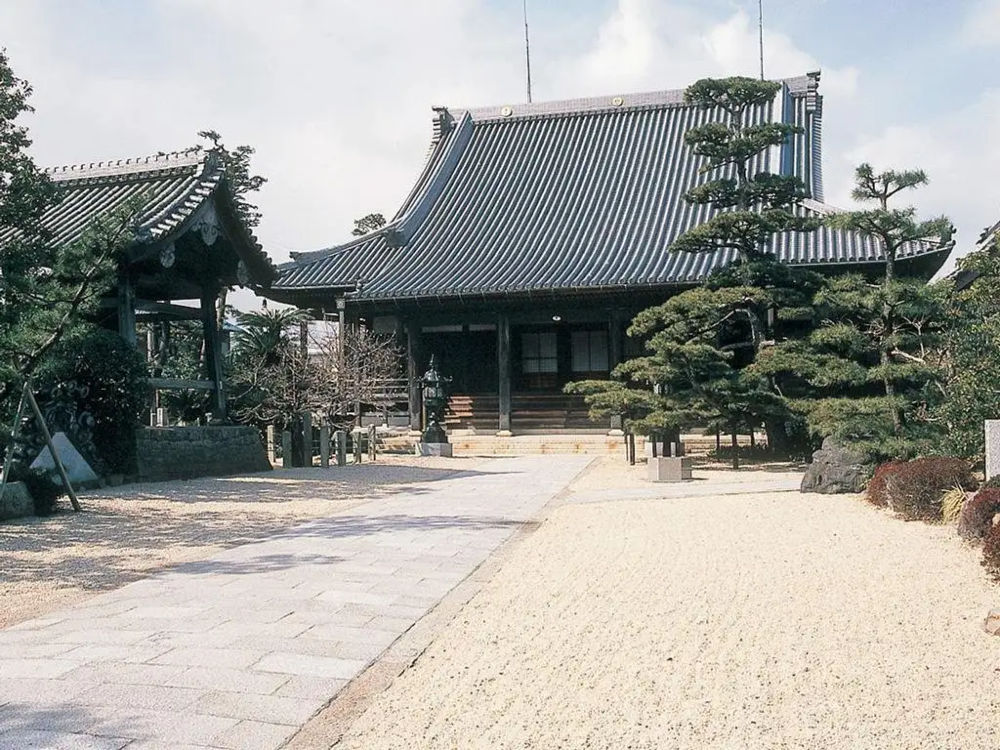
Stay
ホテルファインガーデン桑名長島
Hotel Fain Garden Kuwana Nagashima
Hotel in Kamesunittahyakutsubo, Kawagoe with parking; 5-minute drive from Miekawagoe IC.
Dining
Tomisu亭
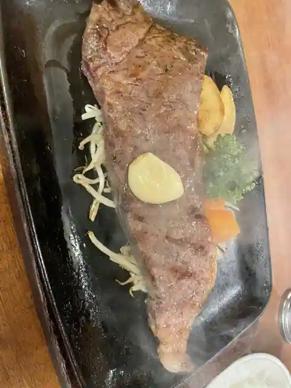
Tomisu Tei
トミスミート
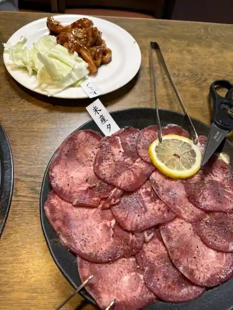
Tomisumito
川越屋
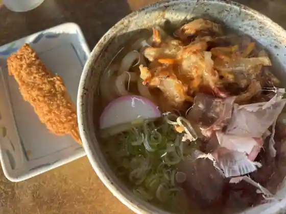
Kawagoe Ya
楽山居
Rakuzan Kyo
とも舎
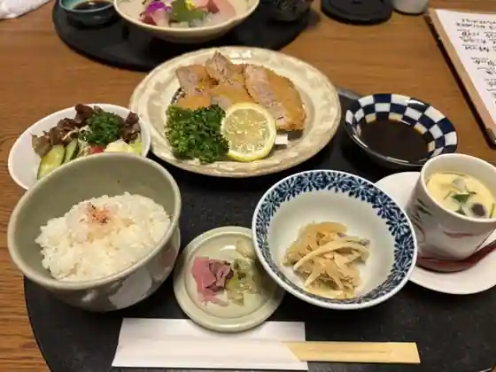
Tomo Sha
樹理
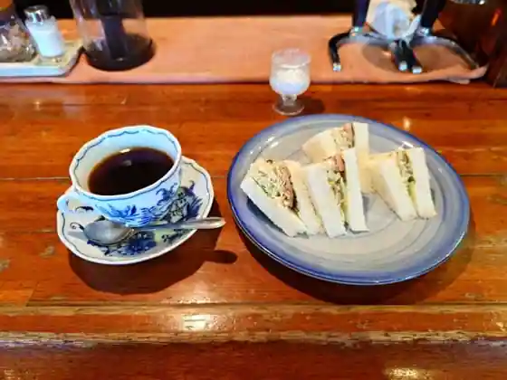
Juri
ラーメン横綱 川越店
Ramen Yokozuna Kawagoe
たかん家のラーメン
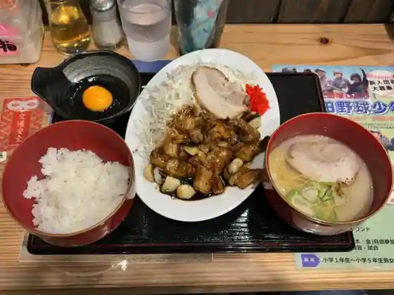
Takan Ie No Ramen
新橋
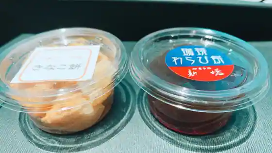
Shinbashi
国産牛焼肉くいどん みえ川越店
Kokusan Ushi Yakiniku Kuidon Mie Kawagoe
マイカリー食堂 三重川越町店
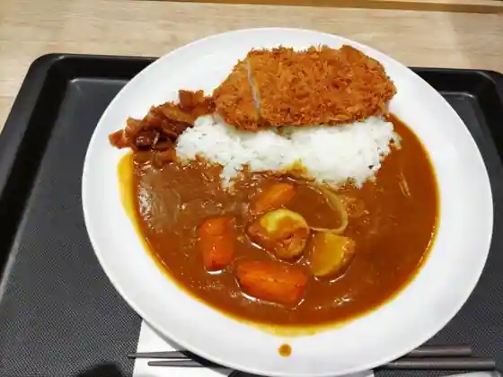
Maikari Shokudo Mie Kawagoe Machi
プチマロン
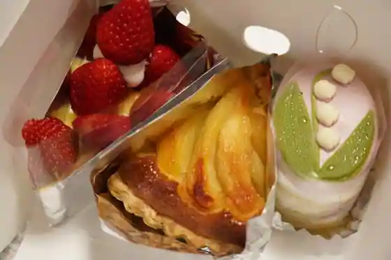
Puchimaron
ホンテーヌ 川越店
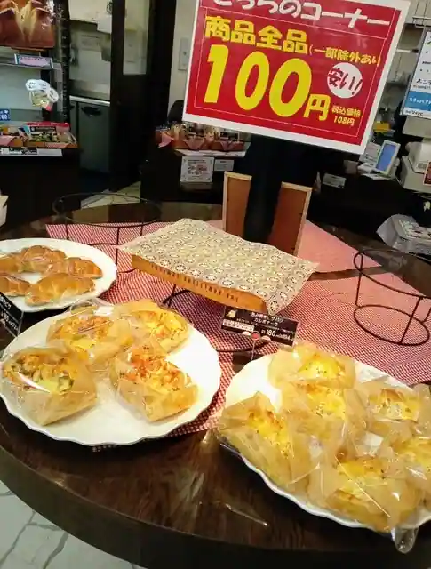
Hontenu Kawagoe
ユカリ
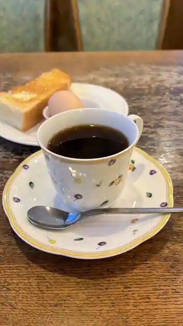
Yukari
ジョリーパスタ 三重川越店
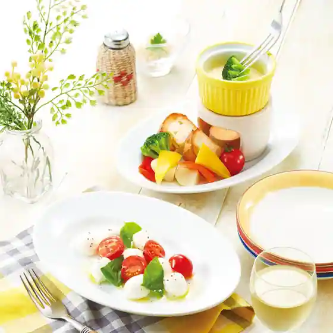
Jori Pasta Mie Kawagoe
スシロー 三重川越店
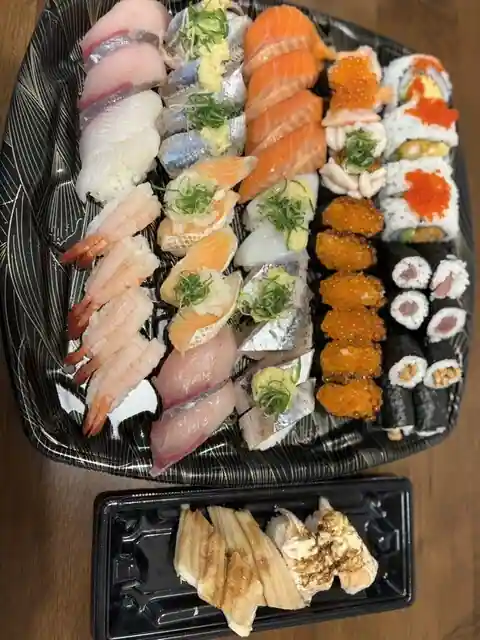
Sushiro Mie Kawagoe
ブロンコビリー 三重川越店
Buronkobiri Mie Kawagoe
PAKUPAKU ラ・ムー三重川越店
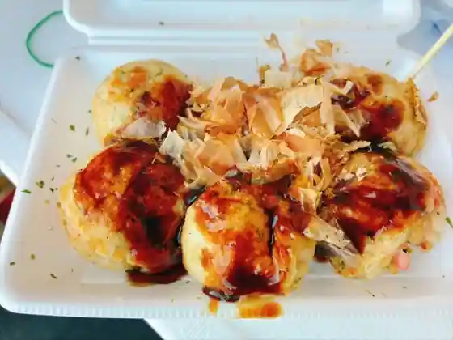
PAKUPAKU Ra Mu Mie Kawagoe
丸源ラーメン 三重川越店
Maru Gen Ramen Mie Kawagoe
ラーメン まこと屋 三重川越店
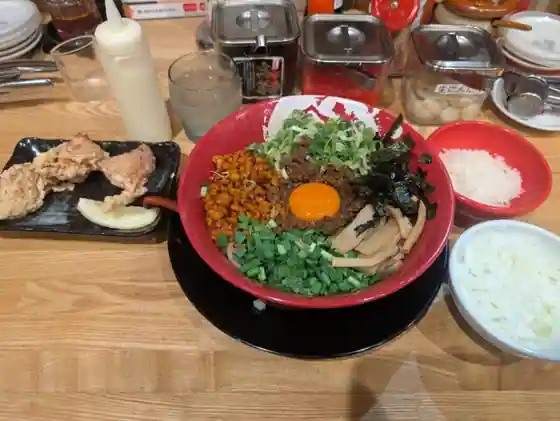
Ramen Makoto Ya Mie Kawagoe
トヨダ
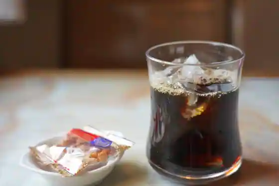
Toyoda
MiuHoney SORA
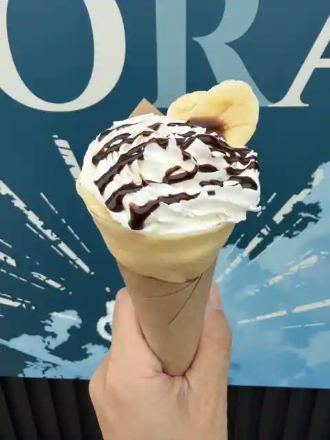
MiuHoney SORA
Café Petitmarron
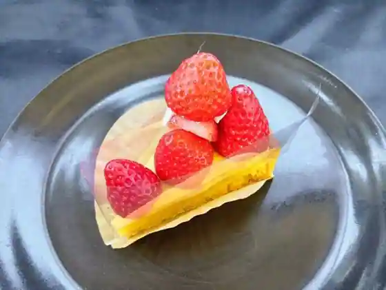
Caf E Petitmarron
Sights
Kawagoe Denryoku Kan Tera 46
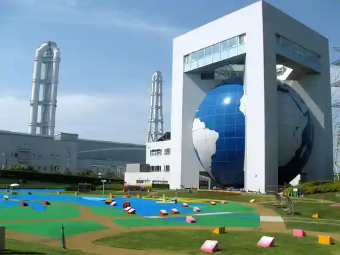
Takamatsu Coast
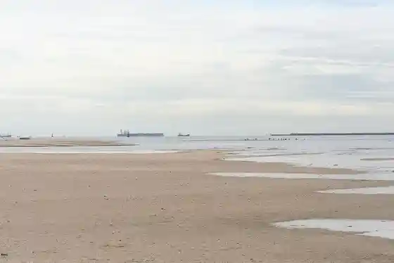
Kawagoe Green Park
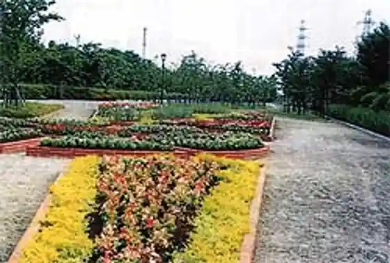
Zenyo Tera